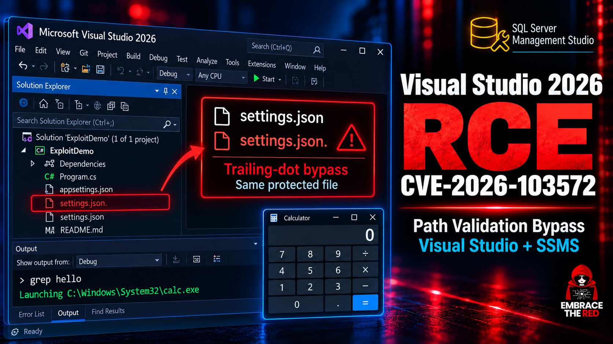
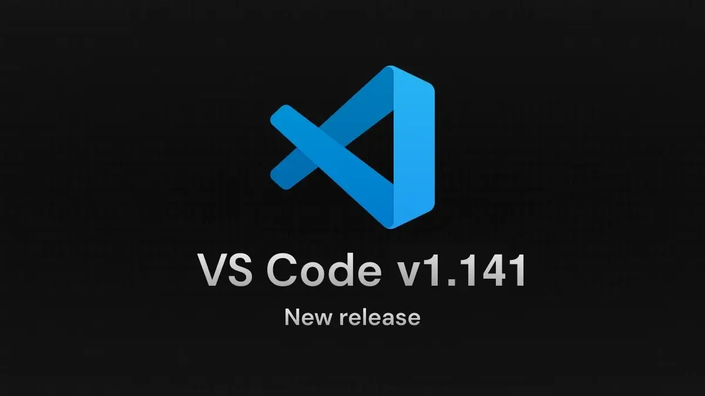
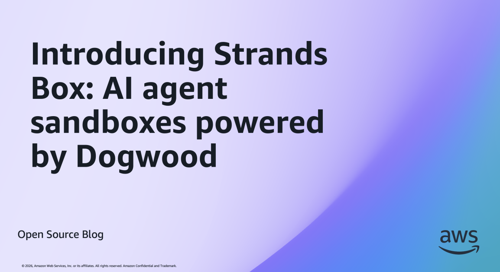
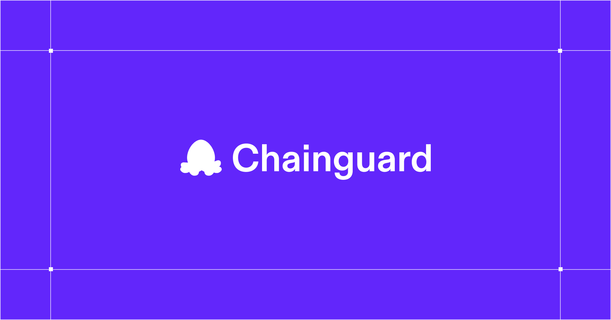
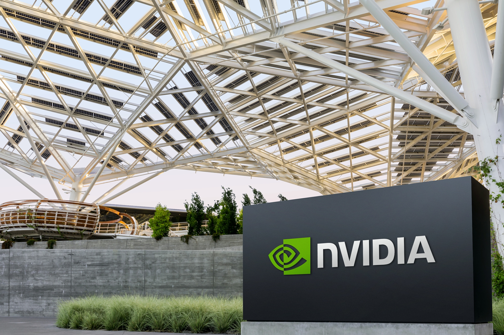

AI Intelligence Daily · 2026-10-15（周四）
今日一句话判断
.mcp + VS Code 9.6）与 AWS 开源沙箱治理栈（Strands Box / Dogwood / TOLAP）同日入栏；国内 Kimi Code Desktop 1.1.0 补上 Linux + Remote Control，desktop shipping=1；Argon 首发价期限纠为 11-30 后翻倍至 $4/$20。 对用户两条主线：Agent 配置写路径/沙箱策略的安全底线，和 Desktop 远程控本机 Agent 的交互形态，同时收紧。专栏一｜新闻
本栏条目：国际 5 长条 + 1 CORRECTION + 1 合并短讯 · 国内 1 长条（含 4 条补收：双 CVE、AWS OSS、XBOW、Argon 期限纠错）。不单独入栏：Manus Video Editor、灵光 2.0、Gemini 自定义 MCP（仍无官方）、DeepSeek 千亿融资（仅媒体、官方未发）。
- Kimi Code Desktop 1.1.0：补上 Linux 安装包，新增 Remote Control（链接/二维码控本机 Agent）与 File Tree；配套 CLI 2.2.0
发生了什么（事实）
- Kimi Code Desktop 升至 1.1.0（官方 Desktop changelog，日期 2026-10-14）：新增 Linux 安装包（AppImage / deb / RPM）；Remote Control——可用链接或二维码从另一设备控制本机 Agent；右侧 File Tree；进度更新能力进 Lab（默认关闭）；新增 CLI 命令
kimi app打开桌面会话。 - 配套 CLI：
@moonshot-ai/kimi-code2.1.1 → 2.2.0（npm15:35:26Z/ GitHub release15:31:16Z，约 23:31–23:35 CST），与 Desktop 同波。 - 相对 10-14 21:18 快讯基线（仍见 Desktop 1.0.4）：属晚间露出，本期补收。官方 X @Kimi_Moonshot 窗内 0 帖，以 changelog / GitHub 为一手。
我的判断
- 本期唯一计入 desktop_work_agent_shipping=1 的正式客户端发船：一线国内 Coding Desktop 补齐 Linux，并把「远程控本机 Agent」做成产品能力——与 Cursor Remote Control、Gemini Mac×Antigravity、Claude/Qoder/MiniMax Desktop 同场对照。
- Remote Control 把攻击面从「本机 UI」扩到「链接/二维码会话」：鉴权、会话时效、是否可远程批准危险工具，是产品安全必答题。
- Lab 进度默认关，说明厂商对「可观测性 vs 打扰」仍偏保守。
往后看：Remote Control 的鉴权与工具批准粒度；Linux 包签名与自动更新；是否跟进 Windows/macOS 对等能力说明；与 TRAE 融合、Qoder Fast、MiniMax Desktop 的形态对照。
对智能体互联网：中相关。远程控本机 Agent 是「人在另一设备、执行在本机」的委托形态，凭证与会话绑定方式可对照 PAP / 本地守护进程鉴权。
对 Work / Agent 引擎：强相关。① Desktop 远程控制 UX（链接/二维码）；② 本地 Agent 进程的调用方鉴权与会话绑定；③ kimi app 一类 CLI→Desktop 拉起路径。
建议动作：① 拆解 Remote Control 会话建立与工具批准流，写入 Desktop 对标表；② 检查自家本地守护进程：远程会话是否短时、是否可撤销、危险工具是否强制本机确认。
配图：changelog 页与产品页无可靠事件专图，按规则不配图。
来源：主 Kimi Code Desktop changelog · GitHub：@moonshot-ai/kimi-code@2.2.0 · npm @moonshot-ai/kimi-code@2.2.0
- Microsoft IDE / Agent 宿主双 CVE（补收）：Copilot 尾点绕过写 `.mcp.json`（CVSS 8.8）+ VS Code 路径穿越 RCE（CVSS 9.6，热修 1.141.1）；同发跨平台 agent 终端沙箱
补收说明：两条均落在 10-13 Patch Tuesday / 热修窗口，Daily 10-14 漏收（watchlist 49/53），本期合组入栏。
发生了什么（事实）
- CVE-2026-103572（MSRC 2026-10-13）：*Visual Studio Tools for Applications and SQL Server Management Studio Remote Code Execution*；Impact RCE；Max Severity Important；CVSS 3.1 8.8（
AV:N/AC:L/PR:N/UI:R）；CWE-94；公开利用 No、Exploitability Less Likely。修复：VS 2022 17.14.42、VS 2026 18.10.4。FAQ：恶意 / 间接注入 prompt 经 Copilot 交互可升至 RCE。致谢 Johann Rehberger。 - Rehberger 全文根因：共享 DLL
Microsoft.VisualStudio.Copilot.Core.dll；Win32 忽略文件名尾.→.mcp.json./settings.VisualStudio.json.绕过保护文件校验，实际写入.mcp.json/ settings；可启用恶意 MCP、改ripgrepPath弹 calc；亦影响 SSMS；修复加GetFullPath归一化；8 月报洞，10-13 出补丁；作者称 $0 bounty。 - CVE-2026-102238（CVE.org Updated 2026-10-14）：VS Code *path traversal* → 未授权网络 RCE；CWE-22；CVSS 3.1 9.6 CRITICAL（
AV:N/UI:R/S:C）；影响 1.0.0 – <1.141.1。GitHub tag 1.141.1 Published 2026-10-13T21:53:53Z（安全热修）。根因技术细节未公开。 - VS Code 1.141 产品侧同波（Stable 2026-10-07，Update 1.141.1 明确 addresses security issues）：
chat.agent.sandbox.enabled跨平台终端沙箱（Win/macOS/Linux）、Agents 窗口网格、worktree 清理、外部 Copilot/Codex 会话续接等（背景能力，非 CVE 根因公开细节）。
我的判断
- 两条合在一起，打到的是 IDE Agent 宿主写配置 / 路径解析 的底线：MCP 配置、settings、工作区路径一旦可被 prompt 间接改写，就等于把攻击面开到「启用恶意 MCP / 换工具路径」。
- 与 Daily 近期 MCP 恶意 client、AgentCorruption、サンドbox 叙事同框：安全重心已从「模型拒答」移到「宿主 canonicalize + 沙箱」。
- 保留：103572 官方标未利用；102238 细节未公开；勿把「agent sandbox」开关当成 CVE 补丁本身。
往后看：Cursor 等 VS Code 分支是否同步；其他 IDE 的 MCP/settings 写路径是否做 GetFullPath 一类归一化；野外利用；Rehberger 是否跟进 Cursor/Claude。
对智能体互联网：中相关。MCP 配置文件成为攻击载荷落点 → Discovery / 配置分发需签名与完整性校验。
对 Work / Agent 引擎：强相关。① 所有「Agent 可写配置」路径必须 canonicalize（拒尾点、拒穿越）；② 保护名单文件（.mcp.json、settings）写前校验；③ 终端/工具沙箱默认开、与工作区信任绑定。
建议动作：① 审计自家 Harness / Desktop 写 .mcp / settings 的代码路径，补 realpath/GetFullPath 与保护文件白名单；② VS Code 用户升到 ≥1.141.1，VS/SSMS 打齐 10-13 补丁；③ 将「prompt→写配置」列为红队用例。


来源：主 MSRC：CVE-2026-103572 · Rehberger：VS Copilot RCE · CVE.org：CVE-2026-102238 · MSRC：CVE-2026-102238 · VS Code 1.141 · vscode 1.141.1 tag
- AWS 开源补收：Strands Box（OS 隔离沙箱）+ Dogwood Local Engine（时序治理）+ TOLAP（工具返回对象级 ACL）
补收说明：三篇均在 AWS Open Source Blog；此前 Daily/快讯因注册表缺口漏扫（watchlist 51），本期合组。
发生了什么（事实）
- Strands Box（Fernando Dingler，2026-10-07，developer preview，Apache 2.0）：OS 隔离（如 macOS Seatbelt）+ Dogwood 细粒度策略；嵌入 Dogwood Local Engine；强制点含 egress / Python(Monty) / Shell / MCP broker；事件统一如
fs:read、http:request；网关可代签凭证（agent 只见 placeholder）；box.toml+policy.dw；时序例：Slack 10 分钟内最多 3 帖。Repo：github.com/strands-agents/box；目前 macOS 优先，计划扩 OS / 部署到 AgentCore·ECS·K8s。 - Dogwood Local Engine（Arora / Tassarotti / Tristan，2026-09-30，Apache 2.0）：嵌入式策略引擎，按历史时序 allow/deny；durable event log（redb）+ snapshot；动态策略更新；harness 负责 verdict 执行与事件完整性。
- TOLAP（Phillip Spies，2026-09-22，Apache-2.0，
github.com/awslabs/tolap）：工具返回数据的对象级 ACL（列/行/字段遮蔽等）；源点强制；.NET/Python/TS SDK + 14 框架集成；新增 purpose-binding、delegation chains、可选 LLM judge；非 MCP 协议本身。
我的判断
- 这是目前公开材料里较完整的「沙箱 + 时序政策 + 工具回传脱敏」开源栈，可直接对标 Windows MXC、NVIDIA OpenShell、Workday C1 权限模型。
- 价值在组合：隔离（Box）解决「能跑什么」，Dogwood 解决「按历史限频/限序」，TOLAP 解决「工具看见什么」——三者缺一，Agent 权限模型就不完整。
- 保留：均为 preview / 博客级；macOS 优先；与 Bedrock AgentCore 产品化路径未在本稿写死。
往后看：是否进入 AgentCore 正式产品；跨 OS；与 MXC / OpenShell 互操作叙事；社区采用。
对智能体互联网：强相关。delegation chains + purpose-binding + 凭证 placeholder，是跨 Agent 委托时可抄的字段与执行点设计。
对 Work / Agent 引擎：强相关。Sandbox 强制点清单、时序政策引擎、工具回传 ACL，可映射到自家 Runtime / Harness / MCP broker。
建议动作：① 读三篇 + 对照 MXC 事件模型，列「强制点 × 时序 × 回传 ACL」缺口表；② PoC：工具回传字段遮蔽是否进 Context 管线。

来源：主 Strands Box · Dogwood Local Engine · TOLAP
- XBOW × GPT-5.6 Sol：约 $40k 算力打出 Chrome 全链利用，Google 奖金 $250k；三洞已修（补收）
发生了什么（事实）
- 作者 Oege de Moor；刊日 2026-10-13。公开模型 GPT-5.6 Sol（及前代）；约 6 天、算力约 $40k；Google 奖金 $250k（称 2026 新规则下首笔）。
- 三洞链：网页 → Windows 机控；三洞已修；首次链因谷歌已知一洞被否 → Black Hat/DEF CON 周（8/2–8/7）换备份洞重建。
- 人机协作：AI 搜源码/PoC/初稿 exploit；人称一年内 agent 可独立发现同类三洞。建议用户：Chrome 保持更新并重启生效。
我的判断
- 与 Chainguard Harness、Anthropic Cyber Mission 同气候：前沿模型已是高水平漏洞挖掘劳动力；「全链」把浏览器当 Agent 入口的风险说得很硬。
- 保留：人机协作、非完全无人；奖金与「一年内独立发现」为作者口径。
往后看：是否出现无人端到端复现；浏览器厂商披露节奏；与 IDE 宿主 CVE 合看「Agent 入口面」。
对智能体互联网：中相关。浏览器仍是个人 Agent 常用宿主 → 补丁时效与会话隔离是信任前提。
对 Work / Agent 引擎：中相关。云端/桌面 Agent 若驱动浏览器自动化，需强制最新浏览器频道 + 沙箱 profile。
建议动作：浏览器自动化默认钉最新稳定版；红队场景加入「agent 辅助挖洞」假设。

- Chainguard Harness 上架 Claude Marketplace：microVM 内用 Mythos 5.1 猎洞，复现后才交付 + 人工审修；beta waitlist
发生了什么（事实）
- Chainguard 官宣（SEATTLE；PR 2026-10-14 01:00 ET）：从源码在隔离 microVM（Chainguard OS）构建活体实例 → 前沿模型（点名 Claude Mythos 5.1）猎洞 → 复现后才交付 + 人工审核修复；无 egress / 无凭证进沙箱。
- Claude Marketplace 可购；Anthropic 代开票，可用既有 Anthropic commitment 抵扣。
- 路径：对 Chainguard 分发 OSS 打补丁进 Repository；或对客户源码出工程师审阅报告；beta waitlist。Dan Lorenc / Daniela Hurtado（Anthropic Head of Commercial Cyber）有引述。
我的判断
- 「复现门槛 + 人工审修 + 无凭证沙箱」是可持续的 cyber harness 产品形状，比纯自动报洞更可运营；与 XBOW 叙事互补（一个卖利用发现，一个卖可合并修复）。
- 保留：beta；非 Desktop 发船；效果数据未公开。
往后看：Marketplace 其他 cyber harness；与 Anthropic Cyber Mission / XBOW 对照；客户案例。
对智能体互联网：弱–中。供应链修复作为 Agent 可购服务，涉及报告投递与责任边界。
对 Work / Agent 引擎：中相关。microVM 猎洞流水线 = 高危 Agent 工作负载的隔离模板（无 egress、无凭证、复现门闩）。
建议动作：观察 beta；若自建安全 Agent，抄「复现才交付」门闩。

来源：主 PRNewswire · chainguard.dev/harness
- CORRECTION：Gemini 4 Argon 首发价有明确期限——introductory 至 2026-11-30，此后 $4/$20（缓存 $0.10→$0.20）
发生了什么（事实）
- Daily 10-14 写 Argon「首发价是 introductory，没给期限」→ 事实纠错。
- 官博脚注原文：*After the introductory period expires on November 30, 2026, the price of $4 per 1M input tokens and $20 per 1M output tokens will apply. Applies to the Argon model intended for public access only.*
- pricing 页一致：
$2.00 through November 30, 2026. $4.00 starting December 1, 2026.（output$10→$20；cache$0.10→$0.20）。
我的判断
- 首发约 6 周窗口；12-01 起翻倍仍可能低于部分前沿编码价，但成本模型必须按 $4/$20 做预算，不能按 introductory 外推全年。
往后看：是否延长 introductory；第三方复测是否改变性价比叙事。
建议动作：Agent Loop 成本表切到 post-intro 价；在 11-30 前完成主力模型并排回归。
- 短讯合并｜政策 / 算力 / 模型迁移与退市（B）
- MiMo V2.5→V2.6 路由已生效（国内）：自 2026-10-14 18:00 CST，
mimo-v2.5-pro→mimo-v2.6-pro、mimo-v2.5→mimo-v2.6-flash自动路由；2026-10-21 10:00 CST 旧 ID 失效。v2.6 思考模式 temperature/top_p 固定；Flash 默认max_completion_tokens32768→131072。一手：deprecate 文档（英文表头曾误写 10:00，以正文 Note / 中文页 18:00 为准）。 - NVIDIA 承诺 $250M / 5 年推进英国 agentic safety & security 研究（国际）：约 $50M/年；支持更广 UK 研究社区及 BOLD（Oxford）、SOFAIR（UCL）、Imperial 等；涉及 OpenShell / Sentry reference。nvidianews（RSS ≈06:01Z）。
- OpenAI GPT-4 系列 API 下线（国际）：公告日 2026-10-14；2027-01-14 关停
gpt-4o（2024-08-06 / 2024-11-20）、gpt-4o-mini-2024-07-18、gpt-4.1-2025-04-14、gpt-4.1-mini-2025-04-14；推荐替换gpt-6-luna。deprecations。 - Anthropic 新加坡办公室 + 政府 MOU（国际，可选）：APAC 第 5 办公室；与 MDDI 签 AI safety/evaluation/responsible adoption MOU；
datePublished2026-10-14T08:30:00.000Z。anthropic.com/news。 - JetBrains Air：云端 Agent Sandboxing 工程稿（国际，空窗）：2026-10-14 12:26Z；云 agent 在 JetBrains 托管隔离环境运行。blog。
- Google Play 个人 AI 应用（国际，可选）：AI Studio vibe code → 以个人应用装到自己设备；私有、与公开目录隔离；标准 Google 账号即可；美国等精选市场、18+。Play Oct 2026。
- Sierra Summit London 开场（弱 UPDATE）：@SierraPlatform 10-14 23:36Z「cab-load of people at our first Sierra Summit in London」；尚无完整 day-1 长稿；PAP 仍 Draft 0.1。
- 脚注 · DeepSeek「千亿融资」：IT之家等转《财经》称第二轮拟扩至约 1000 亿元；DeepSeek 官网 / X 无官宣 → 不升格，只记「媒体称 / 官方未发」。

专栏二｜话题热议
AI agent「失控」归咎 containment / 监控失败（国际，强热）：HN front_page 约 819 分 / 442 评（2026-10-14T17:45Z，CSO Online：*AI agents aren't going rogue — frontier labs are skipping security basics*）。叙事是缺 isolation/monitoring，非模型自发作恶——与本期双 CVE、AWS Box/Dogwood、VS sandbox 同框。
- OpenCode 2.0（国际）：HN 约 246 分 / 90 评（20:48Z）。本地常驻 background service（TUI/web/desktop 共用）、重建 API、Code Mode（MCP→可组合脚本，默认 opt-in）、background subagents；仓库 ★约 213k。与 Codex #48195「默认 daemon」同构对照。
- Anthropic Scion × Mononoke 技术溯源（国际）：HN 约 224 分 / 100 评（20:30Z，sunshowers.io）。延续 Daily 10-14 Scion 工程热议。
- CVE-2026-103572 X 二次传播（国际+中文，中等）：多帖可核但 impressions 多为两位数～数百（例 @ThreatWire_ ≈579 imp）；属 watchlist 49 社区放大，非新 CVE。
互动数字仅引自 HN Algolia / X public_metrics，不编造。国内 V2EX 热榜仅弱 AI 一条；Reddit LocalLLaMA 403、知乎热榜 401，未取到可核高热帖。
专栏三｜开源雷达
| 项目 | 核验点（约 10-15 08:10–08:30 CST） | 看点 / 建议 |
|---|---|---|
| microsoft/mxc | ★2,804（相对 10-14 晚 ★2,786，+18）；release 仍 v1.0.0；窗内 main：#1493 迁移发布管线至 1ES/ESRP（16:59Z） | 发布/签名基建 continuum；无产品能力发船 |
| openai/math | ★14,814（+55）；无窗内 push（最后仍 10-12） | 星数 continuum |
| deepseek-ai/deepseek-harness | ★249,670（+713）；新 tag dsh-v0.2.1-alpha.3 @13:32Z | alpha continuum；非正式 Desktop GA |
| mksglu/context-mode | ★29,102；Trending +947 today | Context/MCP+hooks 路由；Harness 上下文策略直接相关 |
| anomalyco/opencode | ★213,532；OpenCode 2.0 笔记：常驻 service + Code Mode | 对照 Codex #48195：默认后台服务须 opt-in |
| openai/codex#48195 | open · 19 评 · updated 仍 10-13 15:33Z | 官方仍静默；不升格 NEW |
| MCP SDK GHSA | 窗内无新增（最新仍 10-05 批次） | 维持既有补丁 |
| Trending · morluto/rea | 页 +41,034 today（API ★约 241k） | Agent RE 工具链，简记 |
| Trending · ifixai-ai/iFixAi | +2,109 today | 独立审计 AI Agents |
| Trending · vxcontrol/pentagi | +1,025 today | 自主渗透测试 agent 系统 |
Desktop / CLI shipping 表
| 组件 | 基线（10-14 21:18 / Daily 10-14） | 现值（10-15 ≈08:20） | 结论 |
|---|---|---|---|
| Kimi Code Desktop | 1.0.4 | 1.1.0（Linux + Remote Control） | 计入 shipping=1 |
| @moonshot-ai/kimi-code | 2.1.1 | 2.2.0 | CLI 同波，不计单独 shipping |
| @openai/codex | 0.162.1 / alpha.11 | 同左 | 持平 |
| @anthropic-ai/claude-code | 2.1.299 | 2.1.300 | CLI continuum |
| @github/copilot | 1.0.97（prerelease 1.0.98-1） | 1.0.98 latest | CLI continuum |
| @tencent-ai/codebuddy-code | 2.164.0 | 2.167.0 | CLI continuum |
| @minimax-ai/code / MiniMax Desktop | 0.6.11 / 3.1.1 | 同左 | 持平 |
| @deepseek-ai/dsh | 0.2.0-rc.2 / alpha.3 | 同左 | 持平 |
| ZCode / 小艺 Work / Manus | 3.15.3 / 0.7.3 / 2.0.4 | 同左 | 持平 |
| Gemini Apps release-notes | 2026.10.13 | 同左 | 无新 Desktop 条 |
另：HF 窗内无必须升格的新 frontier 模型；LiquidAI LFM2.5-24B-A2B（10-13，端侧 agent）作旁注。
重点事件新进展
Argon 定价（watchlist 45）：CORRECTION 已兑现——introductory 至 2026-11-30，此后 $4/$20（见新闻 6）。第三方复测与 tasks 授权粒度仍观察；桌面自定义 MCP（40）仍无官方 release-notes 字样。
- IDE Agent 宿主安全（49/53）：双 CVE 正式入栏（新闻 2）；X 二次传播中等。
- AWS OSS 沙箱治理（51）：三件套入栏（新闻 3）；对照 MXC / OpenShell / Workday C1。
- XBOW / Chainguard（50/54）：补收与新发同气候入栏（新闻 4–5）。
- MiMo 路由（52）：10-14 18:00 CST 已生效；盯 10-21 旧 ID 停用。
- PAP / Sierra Summit：Draft 0.1 未升版；London Summit 今日进行中（弱现场帖），盯 day-1 实录与 PAP/Muse。
- STEPX Neo（42）：明日 10-16 10:13 首销；本窗无新官方稿。
- Kimi Desktop：基线升至 1.1.0（新闻 1）。
- MXC / TRAE / 灵光 2.0 / Gemini Agent Identity / Codex #48195：无升格级一手；#48195 持平。
今天正在形成的趋势
- Agent 宿主写配置成为高危面：Copilot 尾点写
.mcp、VS Code 路径穿越，说明「prompt → 文件系统」链路必须 canonicalize；与 MCP 生态普及同步放大。 - 沙箱治理栈公开化：AWS Box + Dogwood + TOLAP、VS Code 跨平台 agent sandbox、JetBrains Air 云沙箱、Chainguard microVM，指向「隔离 + 时序政策 + 回传 ACL」三件套。
- Desktop 远程控本机成为标配能力：Kimi Remote Control 接上 Cursor Remote Control / Gemini 后台 tasks 叙事——人机分离执行的 UX 与鉴权要一起设计。
- 前沿模型 = 可运营的 cyber 劳动力：XBOW 全链与 Chainguard「复现后交付」把漏洞挖掘做成流水线；HN containment 819 分说明舆论也在要 isolation/monitoring。
- introductory 定价必须读脚注：Argon 6 周后翻倍，提醒所有「首发价」条目默认查期限。
对智能体互联网最值得吸收的东西
- 配置完整性与 MCP 信任根：
.mcp.json可被间接写入时，Discovery / 配置分发需要签名、只读挂载或 OS 级保护。 - 委托链上的 purpose-binding / delegation chains（TOLAP）：工具回传按目的与委托链遮蔽，可对照 PAP 字段。
- （可选）远程会话凭证短时化：Desktop Remote Control 类能力应默认短时、可撤销、危险操作回本机确认。
对 Work / Agent 引擎最值得吸收的东西
- 写路径 canonicalize + 保护文件白名单：所有 Agent 可触达的配置写 API 做
realpath/GetFullPath，拒尾点与穿越（对标 CVE-103572 修复）。 - 沙箱三件套对照表：OS 隔离（Box/MXC）× 时序引擎（Dogwood）× 工具回传 ACL（TOLAP）——补自家缺口。
- 默认常驻服务必须 opt-in：OpenCode 2.0 / Codex #48195 同构；产品默认后台下载或常驻需明示。
- Context 路由：context-mode 持续涨星 + OpenCode Code Mode，验证「工具输出出窗 / MCP→脚本」是否进 harness。
值得继续跟踪
事件：Kimi Desktop 1.1.0 Remote Control，重点观察：鉴权、工具批准、Linux 更新通道。
- 事件：双 CVE 49/53，重点观察：分支同步、野外利用、其他 IDE 同类。
- 事件：AWS Strands Box 栈（51），重点观察：AgentCore 产品化、跨 OS。
- 事件：Argon 定价 / 复测（45），重点观察：11-30 后真实用量成本；自定义 MCP（40）。
- 事件：STEPX 首销（42） — 明日 10-16 10:13；权限/支付/回滚实测。
- 事件：Sierra Summit / PAP（00） — Summit 进行中；是否有规范升版。
- 延续：XBOW/Chainguard 气候 · Workday×C1 · Scion RPC · JPM 外部 agent · 千问Go!/Manus×OPPO · TRAE EOL 10-23 · 灵光 2.0 官方 · Seed Preparedness · Codex #48195。
- 到期：Sierra London 今日；STEPX 首销 / RTX Spark 10-16；MiMo 旧 ID 10-21 10:00；Find X10 10-21；Copilot Default Enablement / StepFun Launch Night 10-22；MCPCon / TraeWork EOL 10-23；OpenRouter ElevenLabs 5 折至 10-19；GitHub Universe 10-28–29；Mistral L4 10-31；Argon intro 截止 11-30；GitHub Stateless App tokens header 弃用 11-30；Workday×C1 交割 ≤2027-01-31；GPT-4 系列 API 下线 2027-01-14。
未来信号
「配置即攻击面」会逼出 Agent 配置签名标准：MCP/settings 写入若普遍可被 prompt 间接触发，行业可能推动签名配置或 OS 级保护 API。
- 远程控本机 Agent 的合规与安全审阅升温：链接/二维码会话一旦可批工具，企业 MDM / 审计会要求会话录像与批准日志。
- Cyber harness 产品化：Marketplace 上「猎洞→复现→补丁」可能成为订阅附件，改变安全团队的外包边界。
价格 / 订阅雷达
Gemini 4 Argon（CORRECTION）：introductory $2/$10（cache $0.10）至 2026-11-30；自 2026-12-01 起 $4/$20（cache $0.20）（官博 · pricing）。
- MiMo：V2.6 按新模型计价；旧 ID 10-21 10:00 CST 停用。
- OpenAI GPT-4 系列 API：→ 2027-01-14 下线，替 gpt-6-luna。
- Qoder Happy Hour（可选）：Ultimate 8 折至 10 月底，每日 22:00–08:00 CST（@qoder_ai_ide）。
- 延续：STEPX Neo 3999 元全栈（10-16 首销）；OpenRouter ElevenLabs 5 折至 10-19；ZCode 邀请至 11-13；The X Subscription 存量切换。
信源与方法
时间窗：2026-10-14 08:00 → 2026-10-15 08:00 Asia/Shanghai；10-14 白天快讯 7 轮 SILENT，本期消化 49–54/52；四路扫描：flashes/.scan-2026-10-15-daily-intl.md · ...-daily-cn.md · ...-daily-oss.md · ...-daily-verify.md。
- 官方 vendor-check 摘要：P0 intl——OpenAI deprecations（GPT-4→2027-01-14）、Anthropic Singapore+MOU、Google Argon 脚注 CORRECTION + Play/Europe/Impact、AWS OSS 补收可达、NVIDIA UK $250M；国内 P0——Kimi Desktop 1.1.0 shipping、MiMo 路由生效、DeepSeek 融资无官方；P1——JetBrains Air 云沙箱、Sierra Summit 开场弱信号、Chainguard Harness、CVE 页 200；Desktop shipping 仅 Kimi。
- 连接器：X
search_posts_all；gh api；npm view；curl / WebFetch / WebSearch；HN Algolia；GitHub Trending；量子位 / IT之家等；配图自原文 og:image / 文内图至/workspace/daily-1015-assets/。 - 配图：7 张（CVE×2、AWS、XBOW、Chainguard、Argon、NVIDIA）；Kimi / MiMo deprecate / 部分 B 级无事件专图不配；禁用 PR Logo 凑数（Chainguard 用产品页 OG）。
- 脆弱面：Azure AI category 超时；stepx/lingguang SPA；DeepSeek 融资无一手；Reddit/知乎登录墙；Gemini 自定义 MCP 仍无官方字样。